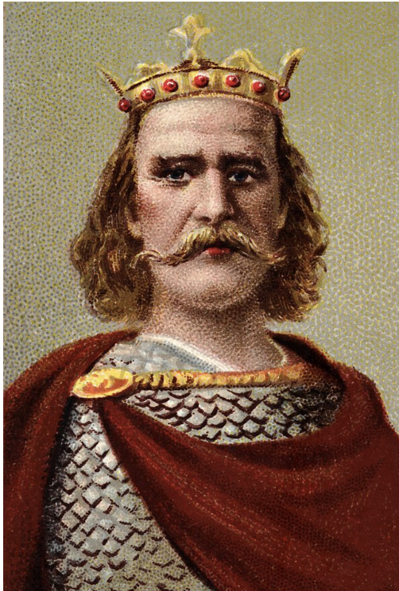

Harald Hardrada
• King of Norway 1045–1066
• Fierce Viking Warrior.
• Skilled ruler.
• Secure control over his own land.
• Support from Tostig Godwinson: Harold Godwinsons brother.
• Claims father was denied of English crown.
• Not a blood relative.
• Known to end disputes in a cruel and ruthless.
 Harald Hardrada image source
Harald Hardrada image source

Harold Godwinson
• Earl of Wessex
• Richest man in the kingdom
• Edward's brother in Law
• No blood ties with Edward the Confessor.
• Good alliances with major English nobles.
• Edward the Confessor's advisor
• Many supporters in the kingdom.
• Promised throne on the kings deathbed.
Harold Godwinson image source

William the Conqueror
• Duke of Normandy
• Harold Godwinson swore on religious relics to support William's claim to the English crown.
• Claims that he was promised throne by Edward.
• Knew Edward the confessor well..
• Cousins with the late king.
• Experienced warrior.
• Many people supported him.
• Support from the pope - God's representative on earth.
William image source
Edgar the Æthling
• 15 years of age.
• Great-nephew of King Edward.
• Anglo-Saxon prince.
• Edgar's father promised throne, but died.
• Lacks support and skill.
• Inexperienced in fighting.
• Only legitimate heir
• Support from brothers Edwin of Mercia and Morcar of Northumbria.
Edgar Æthling image source